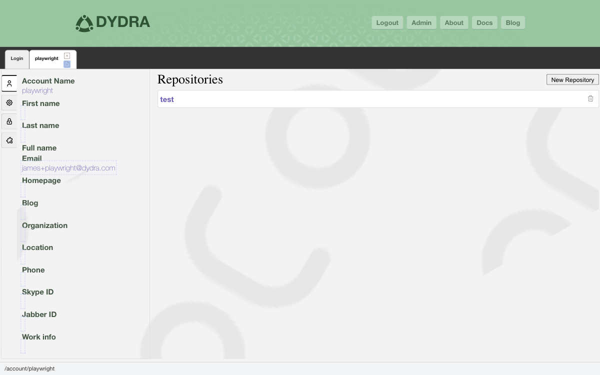

Dydra Studio · user manual · 02
Account Operations
This section covers all operations related to managing your Dydra account, including viewing account information, editing account metadata, and managing authentication tokens.
Dydra Studio · user manual · 02
This section covers all operations related to managing your Dydra account, including viewing account information, editing account metadata, and managing authentication tokens.
After logging in, you will be taken to your account page, which displays:
You can edit various account profile fields to keep your account information up to date.
The following account fields can be edited:
| Field | Description |
|---|---|
firstname |
Your first name |
familyname |
Your family/last name |
fullname |
Your full name |
email |
Your email address |
homepage |
URL to your personal homepage |
blog |
URL to your blog |
company |
Your company name |
location |
Your location |
phone |
Your phone number |
skype_id |
Your Skype ID |
jabber_id |
Your Jabber/XMPP ID |
workinfo |
Work-related information |
Step 1
Navigate to your account page by clicking on your account name in the navigation or by accessing the account directly.

Figure 1: Account metadata field in edit mode with new value entered
Step 2
Locate the field you want to edit in the account information section.
Step 3
Double-click on the field value to enter edit mode. The field will become an editable input field.
Step 4
Enter or modify the value in the input field.
Step 5
Press Enter or click outside the field to save the change. The field will return to display mode with your updated value.
Step 6
Click the Save button (usually located in the tab bar) to persist your changes to the server.

Figure 2: Account page showing the Save button in the tab bar
Note
The application tracks only the fields you have edited. When you click Save, only the modified fields are sent to the server, not the entire account configuration.
Important
Changes are not saved to the server until you click the Save button. If you navigate away from the page without saving, your changes will be lost.
Your account page displays your authentication token, which can be used for programmatic access to the Dydra API.
If you need to generate a new authentication token:

Figure 3: Account page showing token section with Reset Token button
Security Warning
Keep your authentication token secure. Anyone with access to your token can access your account. If you suspect your token has been compromised, reset it immediately.
Dydra Studio supports managing multiple authenticated accounts simultaneously. This allows you to:
Note
Each account maintains its own session and authentication state. You can have multiple account tabs open simultaneously.
If your account metadata changes are not being saved:
If your authentication token is not visible:
After managing your account settings, you can: